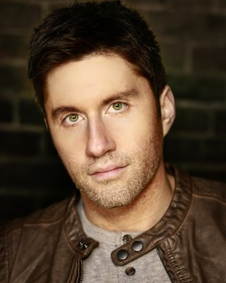

#10108 Papillon


 IMDB-Wertung: 7.1 / 10
IMDB-Wertung: 7.1 / 10  Metascore: 52
Metascore: 52 
Papillon ist zwar kriminell, aber kein Mörder. Trotzdem wird der gewiefte Safeknacker fälschlicherweise im Jahr 1933 wegen Mordes verhaftet und zu einer Gefängnisstrafe verurteilt. Damals verschifft Frankreich einen Großteil seiner Straftäter in die Strafkolonie auf den Teufelsinseln vor der Küste von Französisch-Guayana. Hier trifft das Schlitzohr Papillon auf den Fälscher Louis Dega. Gemeinsam hecken sie einen spektakulären Plan aus, um von der Teufelsinsel zu fliehen.
Jahr: 2017
Dauer: 133 Minuten
FSK: 12
Land: Tschechische Republik Studio: Constantin FilmTonspuren: DTS - ,
Untertitel: Deutsch,
Auflösung: 1080p (1920x804) Größe: 12185 MB
Genre: Thriller, Drama, Krimi, Mystery
Regisseur: Michael Noer
Drehbuch: Aaron Guzikowski, Henri Charrière, Dalton Trumbo, Lorenzo Semple Jr.
Soundtrack: David Buckley
Darsteller:
 Charlie Hunnam als Henri Charrière ('Papillon')
Charlie Hunnam als Henri Charrière ('Papillon') Christopher Fairbank als Jean Castili
Christopher Fairbank als Jean Castili Eve Hewson als Nennete
Eve Hewson als Nennete- Joe David Walters als Police Inspector
 Gilly Gilchrist als Ship Hold Guard
Gilly Gilchrist als Ship Hold Guard Michael Socha als Julot
Michael Socha als Julot- Brian Vernel als Guittou
 Rami Malek als Louis Dega
Rami Malek als Louis Dega- Nicholas Asbury als Commandant
 Jim High als Military Guard
Jim High als Military Guard- Louisa Pili als Clara
 Attila C. Arpa als Ship Deck Guard
Attila C. Arpa als Ship Deck Guard Máté Haumann als Ship Deck Guard
Máté Haumann als Ship Deck Guard-  Dan Cade als St. Martin's Guard
- Antonio de la Cruz als Tribouillard
- Andre Flynn als Galgani
 Yorick van Wageningen als Warden Barrot
Yorick van Wageningen als Warden Barrot- Nikola Kent als Deputy Warden Brioulet
- Michael Adams als Bartiloni
 Roland Møller als Celier
Roland Møller als Celier- Slavko Sobin als El Caiman
 Luka Peros als Santini
Luka Peros als Santini- Goran Navojec als Smuggler
 Dragan Micanovic als Doctor Guibert
Dragan Micanovic als Doctor Guibert Joel Basman als Maturette
Joel Basman als Maturette- Cali Nelle als Manhunter
- Zak Rowlands als Prison Guard
 Kieron Jecchinis als Prison Guard
Kieron Jecchinis als Prison Guard- Reshad Strik als Prison Guard
- Arnaud Humbert als Convict
 Tommy Flanagan als Masked Breton
Tommy Flanagan als Masked Breton- Lorena Andrea als Lali
- Veronica Quilligan als Mother Superior
 Mirjam Novak als Young Irish Nun
Mirjam Novak als Young Irish Nun Demetri Goritsas als Jean-Pierre Castelnau
Demetri Goritsas als Jean-Pierre Castelnau- Ian Beattie als Toussaint (uncredited)
- Fernanda Diniz als Guajiro Indian (uncredited)
- Olja Hrustic als Secretary (uncredited)
 Roy McCrerey als Papillon's Lawyer (uncredited)
Roy McCrerey als Papillon's Lawyer (uncredited)- Nina Senicar als Leper Woman (uncredited)
- Damijan Oklopdzic als Doorman
- Jason Ryan als Accountant
- Sladjana Biljman als Motel Landlord
- David Stoller als Police Inspector
- Mark Robert Pullen als Ship Hold Guard
- Renne Gjoni als Orderly
- Paul Leonard Murray als Orderly
- Tom Leeb als Dega's Lawyer
- Brendan Stokey als St. Martin's Guard
- Mark C. Phelan als Sierra
Datei: X:\2017(N-Z)\Papillon (2017, FSK12, 1920x804).mkv seit 04.12.2018
Festplatte: HD 2017(A-Z)-2018(A-F)
 Es gibt insgesamt 170 Filme in der Gruppe '2017(N-Z)'
Es gibt insgesamt 170 Filme in der Gruppe '2017(N-Z)'